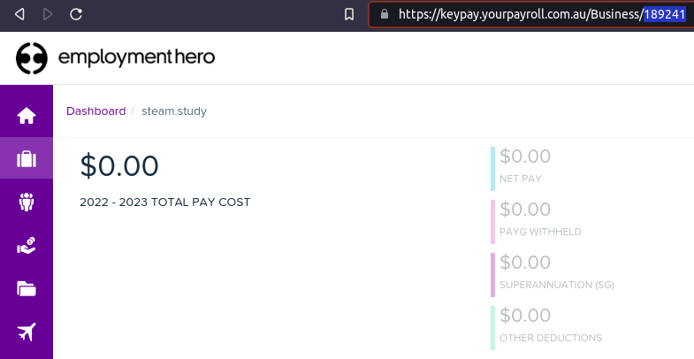
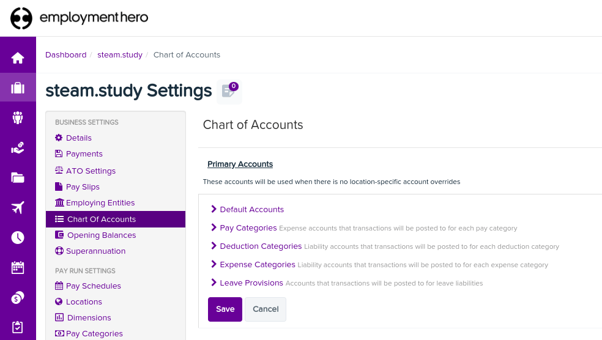

Australia¶
Employment Hero Australian Payroll¶
The Employment Hero module synchronizes payslip accounting entries (e.g., expenses, social charges, liabilities, taxes) from Employment Hero to Odoo automatically. Payroll administration is still done in Employment Hero. We only record the journal entries in Odoo.
Important
KeyPay was rebranded as Employment Hero in March 2023.
Configuration¶
Activate the Employment Hero Australian Payroll module (technical name:
l10n_au_keypay).Configure the Employment Hero API by going to . More fields become visible after clicking on Enable Employment Hero Integration.

You can find the API Key in the My Account section of the Employment Hero platform.

The Payroll URL is pre-filled with
https://keypay.yourpayroll.com.au. Please do not change it.You can find the Business ID in the Employment Hero URL. (i.e.,
189241)You can choose any Odoo journal to post the payslip entries.
How does the API work?¶
The API syncs the journal entries from Employment Hero to Odoo and leaves them in draft mode. The reference includes the Employment Hero payslip entry ID in brackets for the user to easily retrieve the same record in Employment Hero and Odoo.

By default, the synchronization happens once per week. You can fetch the records manually by going to and, in the Enable Employment Hero Integration option, click on Fetch Payruns Manually.
Employment Hero payslip entries also work based on double-entry bookkeeping.
The accounts used by Employment Hero are defined in the section Payroll settings.
For the API to work, you need to create the same accounts as the default accounts of your Employment Hero business (same name and same code) in Odoo. You also need to choose the correct account types in Odoo to generate accurate financial reports.